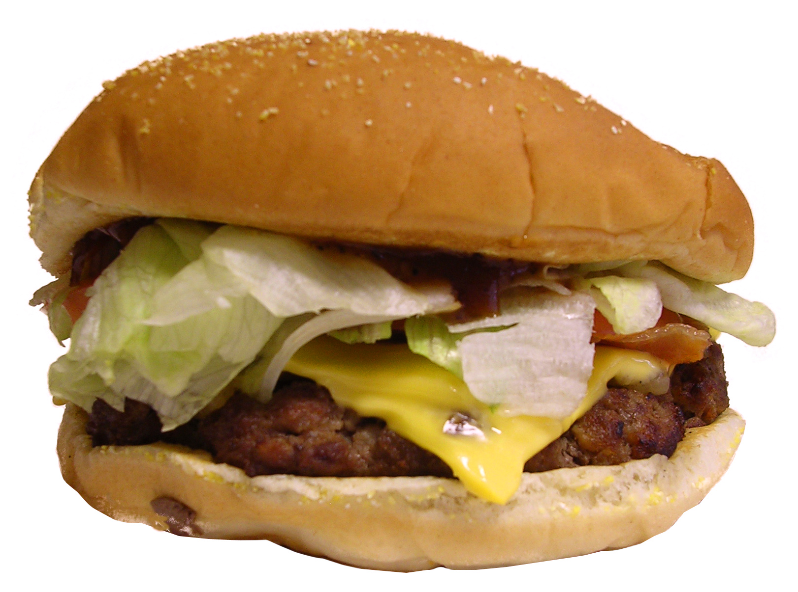

WELCOME TO THE
XPIENT AN ELEGANT GASTROLOUNGE & CONTRY'S #1-RATED RESTAURANT
ON TRIPADVISOR GOLD AWARD WINNER
WELCOME TO THE
XPIENT AN ELEGANT GASTROLOUNGE & CONTRY'S #1-RATED RESTAURANT
ON TRIPADVISOR GOLD AWARD WINNER
The EPIENT is a restaurant in Warsaw, Poland.
It is run by celebrity
chef proprietor Heston Blumenthal.
Housed in a 16th-century building that had
previously been the
site of
The Bell pub, the Xpient reopened in 1995.
Although it originally
served food
similar to that of a French bistro,
it soon acquired
a reputation for precision
and invention,
and has been at the forefront
of many modern culinary developments,
such as food pairing, flavour
encapsulation and multi-sensory cooking.
| food name | price | food name | price |
|---|---|---|---|
| pizza | 575/ksh | Cheese steak burger | 340/ksh |
| Burger with Guacamole | 450/ksh | Burger with Cruncy Fries | 500/ksh |
| Burger with cucumber yogurt sauce | 800/ksh | Astro burgers | 700/ksh |
| Hotdog | 150/ksh | Kebab | 180/ksh |
| Black tea | 160/ksh | Oolong tea | 180/ksh |
| White tea | 150/ksh | Masala tea | 150/ksh |